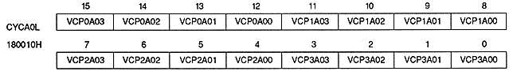
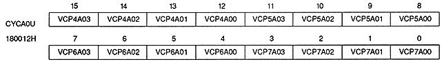

VRAMD | 18000EH | bit 8 | for VRAM-A |
VRBMD | 18000EH | bit 9 | for VRAM-B |
VRxMD | Processing |
0 | Do not split into two banks |
1 | Split into two banks |
A or B is entered in x of the bit name.
RDBSA00,RDBSA01 | 18000EH | bits 1,0 | VRAM-A0 (or VRAM-A) |
RDBSA10, RDBSA11 | 18000EH | bits 3,2 | VRAM-A1 |
RDBSB00, RDBSB01 | 18000EH | bits 5,4 | VRAM-B0 (or VRAM-B) |
RDBSB10, RDBSB11 | 18000EH | bits 7,6 | for VRAM-B1 |
RDBSx1 | RDBSx0 | Intended use of VRAM |
0 | 0 | Not used as RBG0 RAM |
0 | 1 | RBG0 coefficient table RAM |
1 | 0 | RBG0 pattern name table RAM |
1 | 1 | RBG0 character pattern table (or Bitmap pattern) RAM |


VRAM cycle pattern bit (for VRAM-A0) : VRAM cycle pattern bit